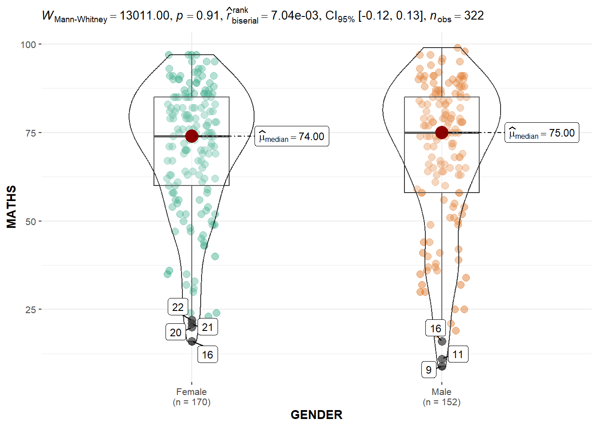
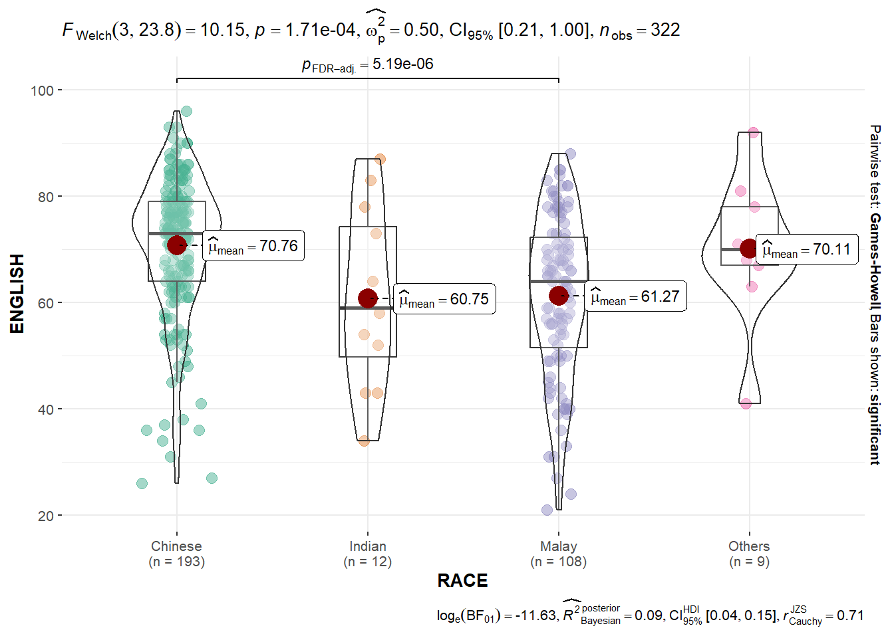
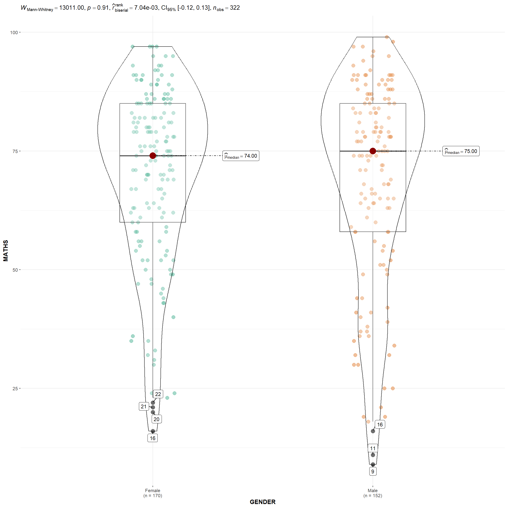

pacman::p_load(ggstatsplot, tidyverse) Ex[4.1] Fundamentals of Visual Analytics - Visual Statistical Analysis
1. OVERVIEW
This study explores data visualisation using Tidyverse package.
five methods for INTERACTIVE DATA VISUALISATION
2. R PACKAGE REQUIRED
2.1 Load R Packages
3. DATA PREPARATION
3.1 Acquire Data Source
This study will be based on fictitious data set provided with this lesson.
3.2 Import Data
3.2.1 Import Data
Involved two (2) steps : import and inspect imported data set.
exam_data <- read_csv("data/Exam_data.csv")
problems(exam_data)# A tibble: 0 × 5
# … with 5 variables: row <int>, col <int>, expected <chr>, actual <chr>,
# file <chr>4.
4.1 One-sample test: gghistostats() method
Show the code
set.seed(1234)
gghistostats(data = exam_data,
x = ENGLISH,
type = "bayes",
test.value = 60,
xlab = "English scores")
Default information: - statistical details - Bayes Factor - sample sizes - distribution summary
Unpacking the Bayes Factor
A Bayes factor is the ratio of the likelihood of one particular hypothesis to the likelihood of another. It can be interpreted as a measure of the strength of evidence in favor of one theory among two competing theories.
That’s because the Bayes factor gives us a way to evaluate the data in favor of a null hypothesis, and to use external information to do so. It tells us what the weight of the evidence is in favor of a given hypothesis.
When we are comparing two hypotheses, H1 (the alternate hypothesis) and H0 (the null hypothesis), the Bayes Factor is often written as B10. It can be defined mathematically as

- The Schwarz criterion is one of the easiest ways to calculate rough approximation of the Bayes Factor.
How to interpret Bayes Factor
A Bayes Factor can be any positive number. One of the most common interpretations is this one—first proposed by Harold Jeffereys (1961) and slightly modified by Lee and Wagenmakers in 2013:

Two-sample mean test: ggbetweenstats()
In the code chunk below, ggbetweenstats() is used to build a visual for two-sample mean test of Maths scores by gender.
Show the code
ggbetweenstats(data = exam_data,
x = GENDER,
y = MATHS,
type = "np",
messages = FALSE)
Default information: - statistical details - Bayes Factor - sample sizes - distribution summary
Oneway ANOVA Test: ggbetweenstats() method
In the code chunk below, ggbetweenstats() is used to build a visual for One-way ANOVA test on English score by race.
Show the code
ggbetweenstats(data = exam_data,
x = RACE,
y = ENGLISH,
type = "p",
mean.ci = TRUE,
pairwise.comparisons = TRUE,
pairwise.display = "s",
p.adjust.method = "fdr",
messages = FALSE)
“ns” → only non-significant
“s” → only significant
“all” → everything
ggbetweenstats - Summary of tests


Significant Test of Correlation: ggscatterstats()
In the code chunk below, ggscatterstats() is used to build a visual for Significant Test of Correlation between Maths scores and English scores.
Show the code
ggscatterstats(data = exam_data,
x = MATHS,
y = ENGLISH,
marginal = FALSE)
Significant Test of Association (Depedence) : ggbarstats() methods
In the code chunk below, the Maths scores is binned into a 4-class variable by using cut().
Show the code
exam1 <- exam_data %>%
mutate(MATHS_bins = cut(MATHS,
breaks = c(0,60,75,85,100)))In this code chunk below ggbarstats() is used to build a visual for Significant Test of Association
Show the code
ggbarstats(exam1,
x = MATHS_bins,
y = GENDER)